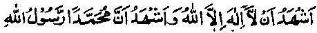

Chapter Seven
63. Ibrahim Khawas’s encounter with a Nazarene monk who later accepted Islam
Sheikh Ibrahim Khawas Rahmatullah alaihe says: I was once travelling through a forest when I came upon a Christian monk, who had tied a sacred string (Zunnar) round his waist (as an emblem of being a monk). He expressed the desire to accompany me, and I accepted him as my companion. (There are many instances, in history, of non-Muslim monks living in company with Muslim Sufi Sheikhs). After journeying for seven days, without food or drink, the monk said to me,“o,follower of Muhammad, let me see some signs of your intimacy with your Lord; (for I cannot go without food any more)”. I supplicated Allah, saying in secret, "O Allah, do not shame me before this Kaafir". At once I saw a dish on which were placed some loaves of bread, roasted meat, some fresh dates and a jug of water. We ate and drank and went on our journey. After seven days’ journey, I hastily said to the Christian, before he could put me to trial again, "O monk, it is your turn to do something." At this, he stood up, leaning on his staff, and started making a supplication. Immediately, two dishes appeared, with twice as much food on them as had appeared at my supplication. I felt ashamed, my face turned pale and I was so bewildered and grieved that I refused to take the food. The Christian insisted that I must eat, but I requested to be excused. He then said, "Take the food; I have to give you two good tidings: The first is that I have accepted your faith,

I declare that there is none worthy to be worshipped but Allah, and I declare that Muhammad is His Rasul.
Saying this, he broke the string round his waist and threw it away. The second is that I supplicated Allah to grant us food saying, "O Allah, if this follower of Muhammad enjoys some position in Thy estimation, grant us food. So, it was owing to you that we were granted this food, and I embraced Islam." After this, we ate and drank and went on journey. We reached Makkah Mukarramah and performed Hajj. My newly converted brother Muslim stayed in Makkah and lived there till his death. May Allah grant him forgiveness!" (Raudh)
There are many such incidents about the non-Muslims’ conversion to Islam, in the annals of history. The incident also testifies to the fact that, sometimes, Allah Ta'ala grants sustenance to some people by virtue of others’ piety, but they foolishly think it to be their own achievement and a consequence of their efforts. There are a number of Ahadith to the effect that ‘You are (often) given help and provision by virtue of the presence of the weak ones among you’. It also becomes clear from this incident that, sometimes, the nonbelievers are granted special favours that appear to be a succour granted to them by Allah, but, in reality, they have been granted to them owing to the benedictions of the believing Muslims.